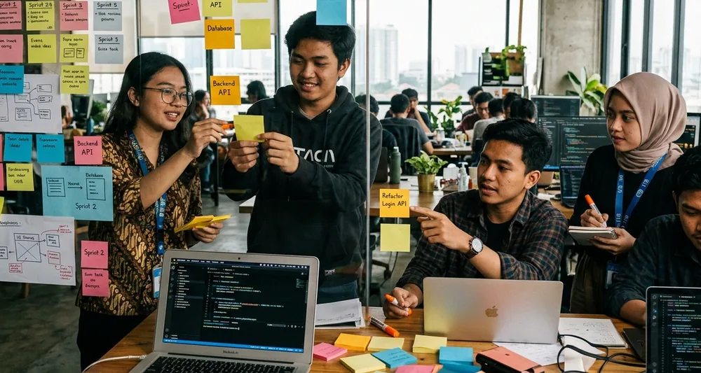

Bagi siswa SMK, mahasiswa tingkat awal, maupun fresh graduate yang baru pertama kali ingin melamar program Praktik Kerja Lapangan (PKL) atau magang digital, tantangan terbesar yang sering dihadapi adalah menyusun Curriculum Vitae (CV) dan Portofolio. Banyak pemula merasa ragu karena belum memiliki pengalaman kerja formal di perusahaan.
Padahal, penyedia program magang digital sangat memahami bahwa peserta yang melamar adalah seorang pelajar. Mereka tidak mencari pengalaman kerja bertahun-tahun, melainkan mencari potensi, semangat belajar, kemauan keras, dan kemampuan dasar yang dibuktikan melalui karya-karya sederhana yang pernah dibuat.
1. Struktur CV Modern & ATS-Friendly untuk Pemula
CV modern yang disukai oleh HRD dan tim teknis saat ini adalah CV dengan format yang bersih, sistematis, dan mudah dibaca oleh sistem Applicant Tracking System (ATS) maupun mata manusia.
Pastikan CV milikmu tidak lebih dari 1 halaman dan mencakup bagian-bagian utama berikut:
- Header / Kontak: Nama lengkap, domisili kota, nomor WhatsApp aktif, email profesional, serta tautan LinkedIn & GitHub/Behance.
- Ringkasan Diri (Summary): 2-3 kalimat yang menggambarkan status pendidikan, jurusan, minat spesifik, dan nilai tambah yang dimiliki.
- Riwayat Pendidikan: Nama sekolah/kampus, jurusan, tahun masuk, serta IPK/Rata-rata nilai yang relevan.
- Project & Pengalaman: Proyek tugas sekolah/kuliah, proyek mandiri, atau pengalaman organisasi.
- Keahlian (Skills): Perangkat lunak (tools), bahasa pemrograman, atau teknik yang dikuasai.
2. Mengubah Tugas Sekolah & Latihan Mandiri Menjadi Portofolio
Banyak siswa menganggap tugas sekolah seperti membuat website landing page sederhana, merancang logo toko fiktif, atau mengonfigurasi jaringan LAN tidak layak dijadikan portofolio. Ini adalah kekeliruan besar!
Setiap karya yang kamu buat dengan usaha sendiri memiliki nilai evaluasi. Kuncinya adalah bagaimana kamu mengemas tugas tersebut menjadi sebuah Case Study (studi kasus) yang profesional. Untuk setiap proyek yang kamu tampilkan di portofolio, sertakan penjelasan berikut:
- Judul Proyek & Peranmu: Misal: Redesain UI/UX Aplikasi Toko Kelontong (Tugas Mandiri).
- Latar Belakang / Masalah: Mengapa proyek ini dibuat atau masalah apa yang ingin diselesaikan.
- Tools & Metode: Perangkat lunak atau bahasa pemrograman yang digunakan.
- Hasil Akhir (Deliverables): Tangkapan layar desain, link repositori GitHub, atau video demonstrasi.

3. Menentukan Format Portofolio Sesuai Bidang Spesialisasi
Setiap bidang pekerjaan digital memiliki media presentasi portofolio yang berbeda-beda. Jangan menyatukan semua jenis file ke dalam satu dokumen PDF yang berat.
Berikut panduan format portofolio ideal berdasarkan bidang jurusan:
- Web Development / RPL: Tautkan akun GitHub dengan README yang tertata rapi, serta sertakan tautan live demo (misal via Vercel, Netlify, atau GitHub Pages).
- UI/UX & Desain Grafis (DKV): Gunakan platform khusus seperti Behance, Dribbble, Figma Prototype link, atau dokumen PDF visual beresolusi tinggi.
- Digital Marketing & Bisnis Digital: Buat slide presentasi (Google Slides/PDF) berisi laporan analisis kata kunci, content plan, atau statistik pertumbuhan media sosial.
- TKJ & Infrastruktur: Buat dokumentasi berupa diagram topologi jaringan (Packet Tracer), skrip otomasi, dan SOP troubleshooting langkah demi langkah.
Portofolio terbaik tidak dinilai dari seberapa rumit aplikasinya, melainkan dari kejelasan alur pikir dan solusi yang kamu berikan atas suatu masalah.
4. Kesalahan Umum Saat Menyusun CV & Portofolio Pemula
Agar CV milikmu tidak langsung dieliminasi pada tahap awal, perhatikan beberapa kesalahan fatal yang sering dilakukan pelamar pemula:
- Penggunaan Progress Bar Untuk Skill: Jangan menilai kemampuanmu dengan bar rating seperti "Photoshop 80%" atau "HTML 90%". Ukuran persen tersebut bersifat subjektif dan tidak bermakna bagi recruiter. Cukup sebutkan nama aplikasinya.
- Desain CV Terlalu Ramai: Hindari template CV yang terlalu banyak menggunakan hiasan grafis, ikon warna-warni, atau kolom ganda yang membingungkan sistem pembaca ATS.
- Email Tidak Profesional: Gunakan alamat email resmi dengan format nama asli (contoh: budi.santoso@email.com), bukan nama samaran atau julukan.
5. Tata Cara Mengirimkan Berkas Lamaran Magang/PKL
Setelah CV dan portofolio selesai disusun, langkah terakhir adalah mengirimkannya ke instansi atau perusahaan penyelenggara magang. Jika mengirimkan via email atau form online, tuliskan Surat Pengantar / Body Email yang sopan dan lugas.
Jelaskan secara singkat siapa dirimu, asal sekolah/kampus, jurusan, periode magang yang diajukan, serta alasan mengapa kamu tertarik bergabung dengan program tersebut. Lampirkan CV dan portofolio dalam format PDF yang berukuran tidak lebih dari 5 MB.
Kesimpulan
Menyusun CV dan portofolio bagi pemula tanpa pengalaman kerja formal sebenarnya tidak sejelas yang dikhawatirkan. Dengan menonjolkan proyek praktik sekolah, latihan mandiri, organisasi, serta menyajikannya secara terstruktur dan estetik, kamu sudah memiliki modal kuat untuk memikat hati pembimbing lapangan dan recruiter industri digital.
Pertanyaan Umum (FAQ)
Tim Mentoring Magang Digital
Praktisi dan mentor industri digital yang aktif mendampingi siswa SMK & mahasiswa dalam membangun portofolio serta kesiapan karir profesional.